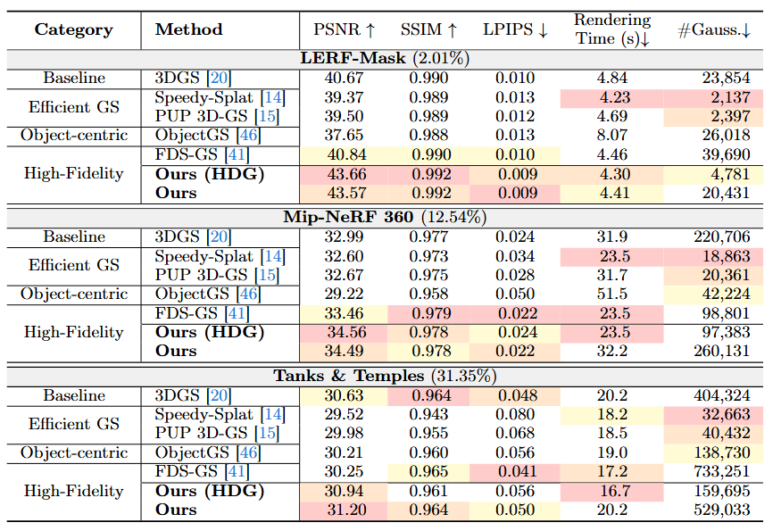

Abstract
Object-centric rendering has emerged as a crucial requirement for various resource-constrained applications. However, directly applying 3DGS-based methods to masked multi-view images disrupts multi-view geometric consistency and produces spurious Gaussians that degrade object fidelity. To address these challenges, we propose a stable 3DGS framework for object-centric reconstruction. We resolve inconsistent supervision by applying Object-aware View Filtering and pruning spurious background geometry through Object-centric Density Refinement. Furthermore, to ensure fair evaluation, we introduce a comprehensive benchmark encompassing diverse object-centric scenarios. Our method achieves superior robustness and improved fidelity under multi-view inconsistent supervision.
Method

Figure 2: Overview of SOC-GS for Object-centric 3D Gaussian Splatting. The pipeline first removes inconsistent views through (a) Object-aware View Filtering. It then refines the Gaussian distribution with (b) Object-centric Density Refinement to prune background Gaussians and concentrate density around the target object for compact reconstruction.
Qualtitative Results (Demo)
LERF-Mask: figurines_33
3DGS
Ours
Side-by-side comparison on Focus dataset scenes. Drag to orbit and scroll to zoom.
Quantitative Results

Table 1: Quantitative comparison on the FOCUS benchmark. The percentages next to each dataset indicate the average object area ratio within the frame. Ours (HDG) denotes a variant where a higher densification gradient threshold is used. The best, second-best, and third-best results are highlighted in red, orange, and yellow, respectively.
BibTeX
@article{YourPaperKey2024,
title={Your Paper Title Here},
author={First Author and Second Author and Third Author},
journal={Conference/Journal Name},
year={2024},
url={https://your-domain.com/your-project-page}
}